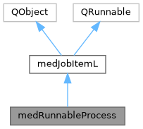

|
MUSICardio 4.2
MUSICardio application created by Inria Epione, IHU LIRYC and Université de Bordeaux
|
Loading...
Searching...
No Matches
|
MUSICardio 4.2
MUSICardio application created by Inria Epione, IHU LIRYC and Université de Bordeaux
|
Wraps a dtkAbstractProcess into a medJobItemL object This class allows to run a dtkAbstractProcess in a separate thread. Since it derives from medJobItemL, this class benefits from the same signals. It can also be used in cunjunction with the medJobManagerL. As for any medJobItemL, a non-blocking connection is needed for QThreadPool::waitForDone() More...
#include <medRunnableProcess.h>


Public Slots | |
| virtual void | onSuccess () |
| virtual void | onFailure () |
| virtual void | onProgressed (int) |
| virtual void | onCancel (QObject *) |
 Public Slots inherited from medJobItemL Public Slots inherited from medJobItemL | |
| virtual void | onCancel (QObject *) |
Public Member Functions | |
| void | setProcess (dtkAbstractProcess *proc) |
| dtkAbstractProcess * | getProcess () |
| Public Member Functions inherited from medJobItemL | |
| virtual void | run () |
Protected Member Functions | |
| virtual void | internalRun () |
| virtual void | internalRun ()=0 |
Additional Inherited Members | |
| Signals inherited from medJobItemL | |
| void | progress (QObject *sender, int progress) |
| void | progressed (int progress) |
| void | success (QObject *sender) |
| void | failure (QObject *sender) |
| void | cancelled (QObject *sender) |
| void | showError (const QString &message, unsigned int timeout) |
| void | activate (QObject *sender, bool active) |
| void | failure (int error) |
| void | disableCancel (QObject *sender) |
| Protected Slots inherited from medJobItemL | |
| void | onProgress (QObject *sender, int prog) |
Wraps a dtkAbstractProcess into a medJobItemL object This class allows to run a dtkAbstractProcess in a separate thread. Since it derives from medJobItemL, this class benefits from the same signals. It can also be used in cunjunction with the medJobManagerL. As for any medJobItemL, a non-blocking connection is needed for QThreadPool::waitForDone()
|
protectedvirtual |
Implements medJobItemL.
|
virtualslot |
Contrary to success() and failure(), the cancel() method is called from outside this object (success and failure and emitted by the process itself). This slot implements the expected behaviour when a cancel request was made by calling the appropriate onCanceled() slot of the running dtkAbstractProcess
|
virtualslot |
dtkAbstractProcess signals success(), failure() and progressed(int) need to be translated into corresponding medJobItemL signals taking in argument the pointer of the object. This is the role of those slots.
| void medRunnableProcess::setProcess | ( | dtkAbstractProcess * | proc | ) |
Specify which dtk process to run.